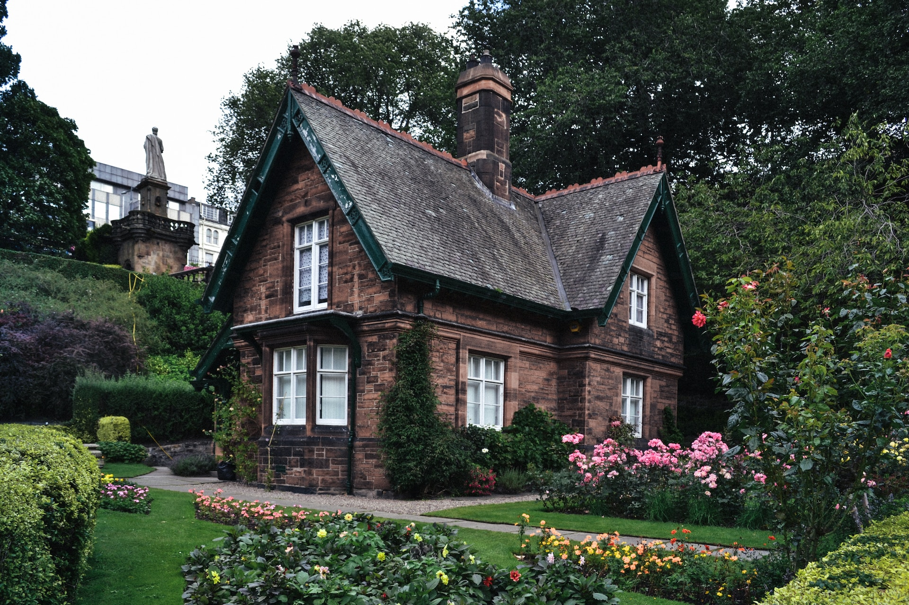

Jardins da Cidade, na cidade de Nova Esperança
 4 pessoas
4 pessoas
2 quartos e 2 banheiros, permitido animais de estimação
R$ 2.800, 00/mêsO bairro Jardins da Cidade é um dos mais valorizados da cidade de Nova Esperança, oferecendo aos seus moradores uma infraestrutura completa e acessível. Você estará a poucos minutos de distância de escolas, hospitais, restaurantes, parques e diversas opções de comércio e lazer.
Proprietário John Doe